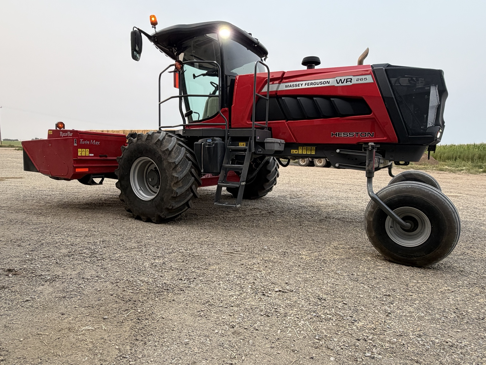

Description
WR265 with RazorBar / TwinMax
Massey Ferguson WR265 self-propelled windrower with a RazorBar header and TwinMax conditioning system.
- 1,156 engine hours
- 906 cutting/header hours
- RazorBar disc header
- TwinMax conditioning system
- LED work lights
- Clean, well-presented machine
Located in Cranford, Alberta. Contact VanRed Enterprises for more information, additional details, or hauling options.